What these signs do
Warning signs alert you to a hazard ahead so you can slow down and raise your attention before you reach it. They only warn: the one duty they impose is the general one of prudence, to slow down and be ready to stop. They do not forbid a maneuver, order a specific one, or assign right of way. An answer that has a warning sign forbidding something, ordering something, or granting precedence is almost always false. Its job is to say "danger ahead, be ready." The one exception to "warn only" is the railroad-crossing cross described below, which also requires you to yield.
The warning triangle
Most warning signs share a single shape.
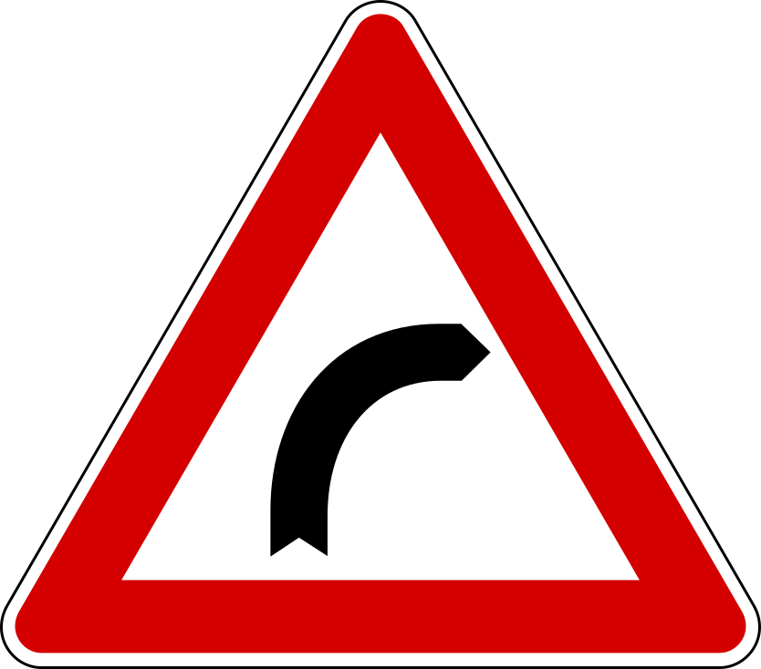
- The triangle is the family's form. It is equilateral, points up, and has a white background, red border, and black symbol. The great majority of warning signs look like this; the example above is the right-bend sign, covered with its family further down. Two more shapes belong to this family, but both serve the railroad crossing and are covered in that group's own section below.

One variation to keep in mind: at road work sites the triangle keeps its shape and symbol but appears on a yellow background instead of white. It means the same thing, only temporary. For American drivers this is the key color swap: Italy's yellow does the job that orange does in the US, marking a temporary sign, almost always road work. Do not read it as the permanent-warning yellow of US diamonds, since Italy's permanent warnings are the white triangles.
Where they are placed
Outside of town a warning sign normally stands about 150 m (165 yd) before the hazard. In town, where speeds are low, it can stand as little as 50 m before it. A supplementary panel under the sign may state the distance to the hazard or the length of the stretch it covers. Tell them apart by the arrows: a panel with arrows at both ends gives the length of the stretch, while a plain figure gives the distance to where the hazard begins.
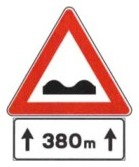
So the triangle marks where the danger begins ahead, not the spot you are standing on. The St. Andrew's cross, shown in the railroad-crossing section further down, stands by contrast at the crossing itself.
The look-alike pairs that cause most errors
Most mistakes here come from confusing two signs that share a symbol. Learn each pair as a contrast.
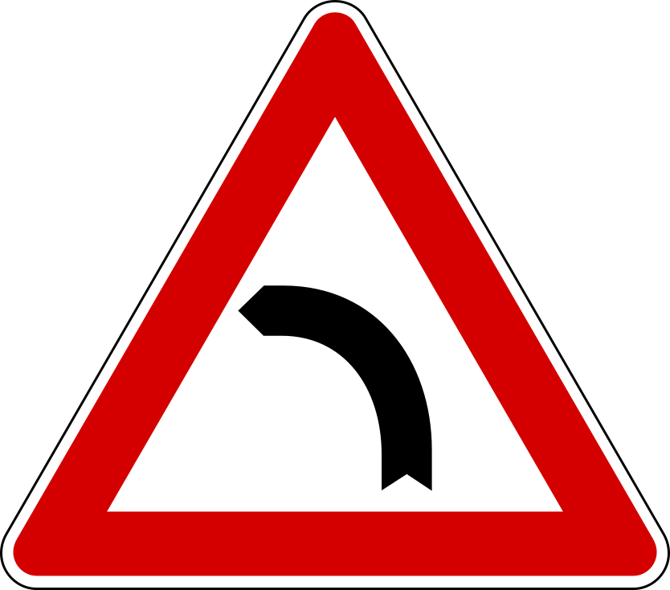
- Bend direction. The sign mirrors the road. A curve drawn to the left warns of a left bend (curva pericolosa a sinistra), a curve drawn to the right of a right bend. Either curve sign may carry a panel reading TORNANTE (hairpin turn).
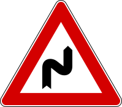
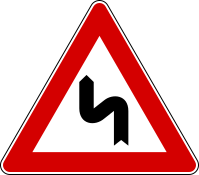
- Double bend. The double-bend sign (doppia curva pericolosa) shows whether the first curve goes right or left. It may carry a TORNANTI panel (hairpin turns) or an extent panel giving the length of the winding stretch.
Every curve sign warns of one thing, limited visibility, and the four rules below follow from it. Set your speed by visibility, curve radius, tire wear, the vehicle's condition and load, so that you can stop for an obstacle you cannot see yet, and take extra care in rain or on a space-saver spare wheel.
Where to drive. On a two-way road with one lane per direction, keep as close as possible to the right edge, never toward the white line that separates the two directions and never to the left. On a one-way road that duty does not apply.
Overtaking. On a two-way road with one lane per direction you may not overtake, not even a motorcycle, and not even without crossing the solid center line. Overtaking is allowed where the road is one-way, has two or more lanes per direction, or has separate carriageways.
Maneuvers that are banned. On any curve you may not make a U-turn, back up, stop or park. The ban covers the brief halt (fermata) exactly as it covers parking (sosta), whatever the road's layout.
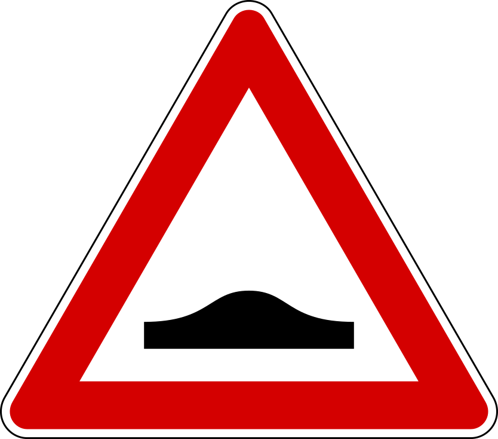
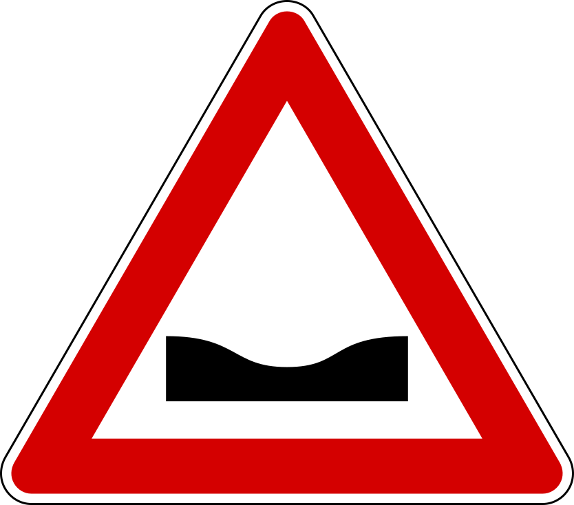
- Bump versus dip. The crest (dosso) is a convex rise, the top of a hump in the road; the dip (cunetta, also avvallamento) is a concave hollow. The profiles point opposite ways. Neither one means a rough or deformed road surface: that is a separate sign, covered below.
The cunetta can collect water in rain, and mud or debris, so slow down even when you can see through it, hold the wheel firmly, and spare the suspension; overtaking there is allowed if conditions permit, with particular care.
Everything the dosso asks of you follows from one fact: the crest hides the road beyond it. So moderate your speed for the limited visibility; stopping, parking, U-turns and backing up are banned on both the uphill and the downhill stretch; and on a two-lane two-way road overtaking is banned going up, because you cannot see oncoming traffic, but allowed going down, where the road ahead is open to view again. The same sign can also announce a built-in speed bump (dosso artificiale), but unless the question specifically mentions that, assume it warns of a crest.
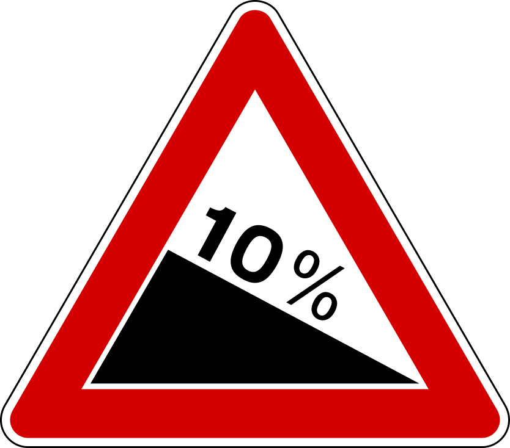
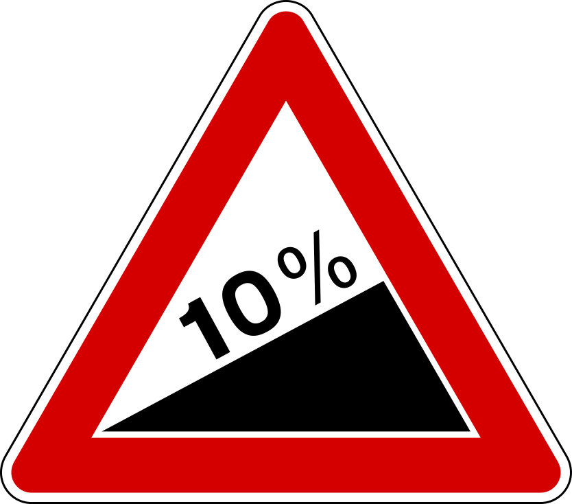
- Descent versus ascent. A steep downhill sign (discesa pericolosa) and a steep uphill sign (salita ripida) carry the same percentage grade but slope opposite ways. On a narrow steep road the vehicle going downhill is generally the one that must yield. Going down, the braking distance increases: keep a longer following distance, engage a low gear and let the engine brake; riding the brakes overheats them; never coast with the clutch pedal held down. Going up, the braking distance decreases; a low gear is for pulling power, not for braking. The percentage on the sign is the grade, not a speed limit. A wet road makes the descent more dangerous still, so take extra care in rain.
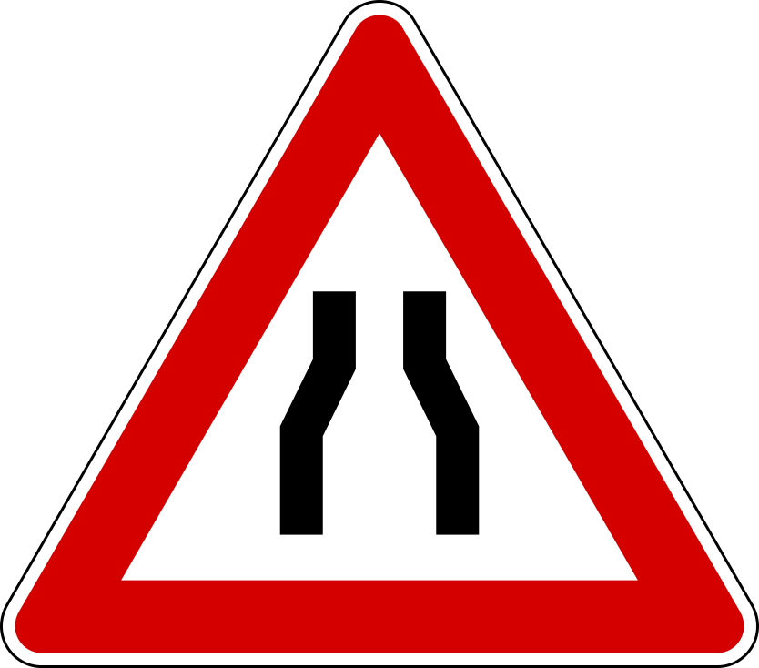
- Road narrows (strettoia). The symmetric sign warns that the road narrows on both sides. The danger on a two-way road is difficulty passing oncoming vehicles; slow down and stop if needed, and stop anyway if the other vehicle has already entered the narrowing, whatever its right. The sign itself assigns no priority and does not announce an alternating one-way: those are the separate yield / priority in alternating one-way signs that may follow it.
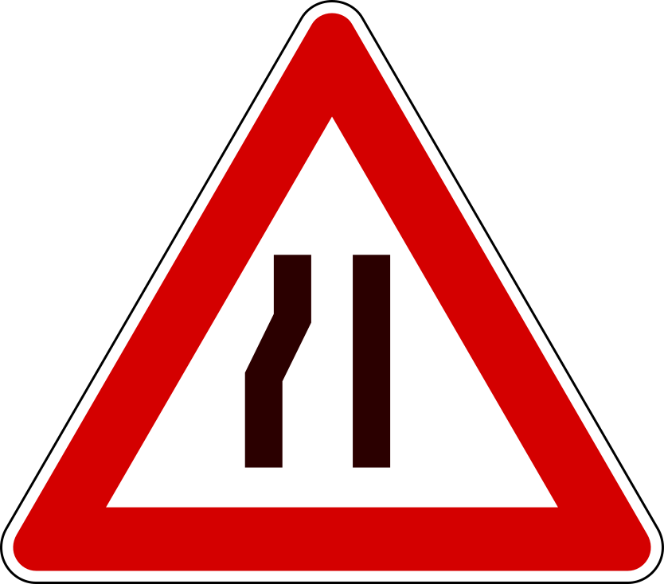
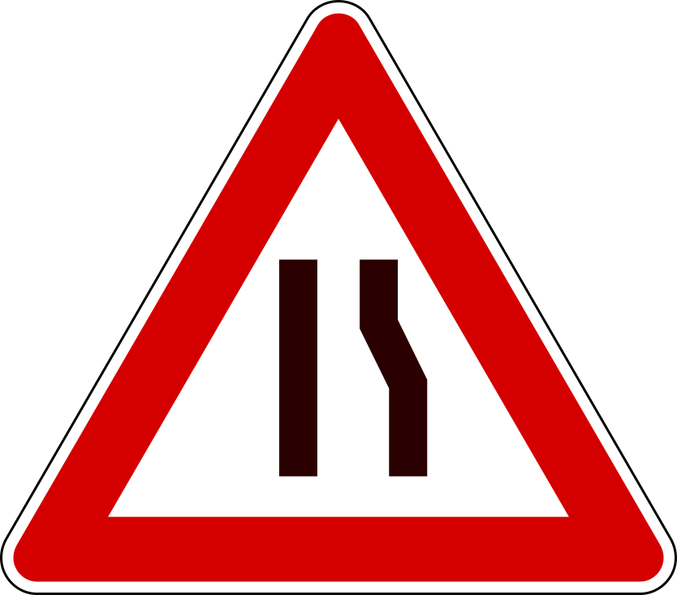
- One-sided narrows. The asymmetric versions warn that the road narrows on the left only or on the right only; the symbol shows which edge moves in. The behavior is the same as for the symmetric sign in the box above.
The railroad-crossing group
Several signs work together here, in sequence as you approach, and they are a frequent source of confusion. This group also brings the family's two extra shapes: the countdown rectangles and the cross.
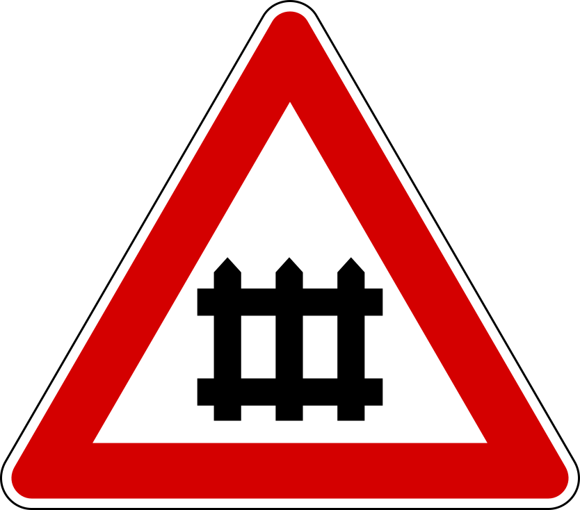
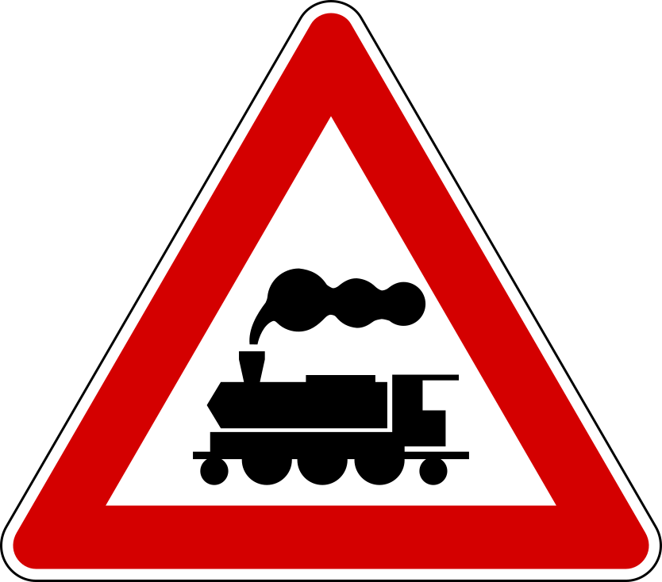
- The advance triangle shows a hazard ahead. A gate symbol marks a crossing with barriers or half-barriers, whatever the number of tracks, and a locomotive marks one without barriers.
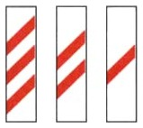
- The countdown panels (pannelli distanziometrici) come next: upright rectangles with red oblique bars, set on the approach. They stand at about 150, 100 and 50 m from the tracks: the three-bar panel is farthest away and carries the warning triangle, then comes the two-bar, then the one-bar as you get closer, so the count decreases as you approach. At a crossing without barriers they stand before the St. Andrew's cross, which is at the tracks. The three-bar panel can also accompany the movable bridge sign.
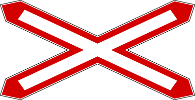
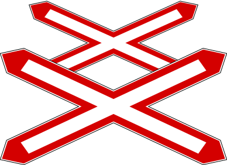
- The St. Andrew's cross (croce di Sant'Andrea) is a red-and-white X standing at the crossing itself. A single cross marks one track, and a doubled cross marks two or more tracks. Unlike the warning triangles in the boxes above, it marks a yield point: this is the family's one exception to "warn only". Stop if a train may be approaching. It may be mounted horizontally or vertically, and it may be paired with a STOP sign.
- What follows the triangle. A crossing with barriers is guarded by one steady red light; one with half-barriers by two alternately flashing red lights; both may add an acoustic device. Lights and sound come on to announce the barriers closing. When the system fails, trestles (cavalletti) with red and white stripes stand in for the barriers and close the crossing just the same.
- Behavior at the crossing. Never enter if heavy traffic could leave you stuck on the tracks; stop at the stop line when the red lights are on or the audible warning sounds, and move again only when the light goes out; if the lights and sound are off at a crossing without barriers, stopping is not obligatory, but slow down according to how far you can see along the line and check for trains from both sides; at a double cross a second train may follow on the other track. If your vehicle stalls on the tracks, get everyone out and do everything you can to warn approaching trains. No sign here requires honking. Stopping, parking, U-turns and backing up are banned near and on the tracks.
The rest of the family, sign by sign
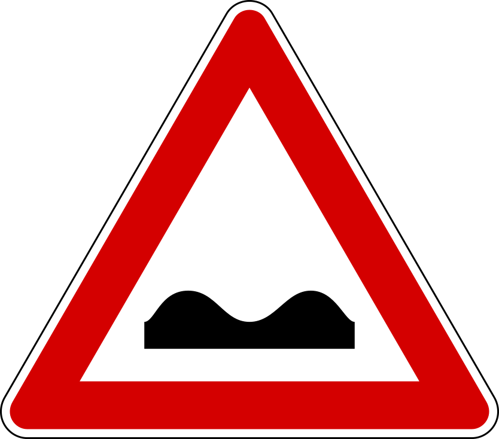
- The rough road (strada deformata, also dissestata) sign warns of a stretch in poor condition with an uneven surface. It may be paired with a speed limit sign and with an extent panel. Adjust your speed to the surface even with nobody coming, to spare the suspension; hold the wheel firmly, especially with a trailer, and expect swerving by oncoming vehicles. Keep right; overtaking is allowed if conditions permit. It does not mean a crest, a dip or limited visibility.
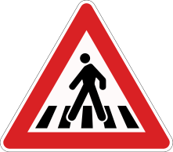
- The triangular pedestrian-crossing (attraversamento pedonale) sign warns that a crosswalk is ahead; the advance triangle is normal even in town. Do not confuse it with the square blue sign that marks the crossing itself: the triangle is the advance warning, the square is the place. Never overtake a vehicle that has stopped to let people cross, and take care not to rear-end one that brakes for them; no stopping or parking on the stripes; failing to yield on the stripes costs license points.
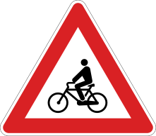
- The bike crossing (attraversamento ciclabile) sign warns that cyclists cross or enter the road ahead. The same care applies as at the pedestrian crossing: never overtake a vehicle that has stopped to let them cross. Moderate your speed so as not to endanger the cyclists.
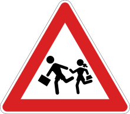
- The children (bambini) sign stands near schools and play areas. Consider possible reckless behavior and unpredictable movements, from children on the sidewalk too, not only those on the roadway: slow down and be ready to stop, for example if a ball rolls onto the roadway. Never overtake a vehicle that has stopped to let children cross. The sign bans nothing and has no school-hours meaning.
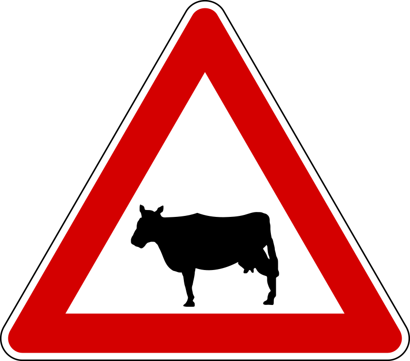
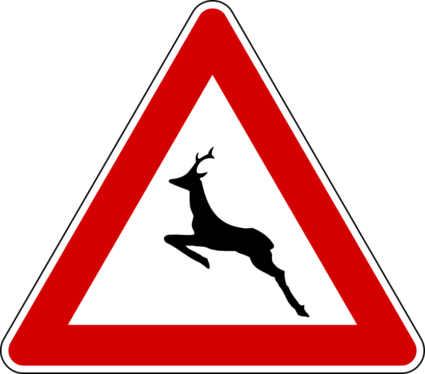
- The animal signs warn of domestic animals (animali domestici vaganti, a farm animal) or wild animals (animali selvatici vaganti, a deer) on the road. Slow down and stop if they are frightened or do not move away. Neither sign obliges you to honk repeatedly.
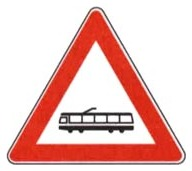
- The tram line (attraversamento tranviario) sign warns of tram tracks crossing or joining the road. A tram (tram) runs on rails set in the road, so it cannot steer around anything in its way. A trolleybus (filobus) is a bus on rubber tires that takes its power from two overhead wires, and its driver steers it like any other bus. The sign concerns the rails and the tram, and it says nothing about trolleybuses. The tram has priority, unless a traffic light or an officer says otherwise, and its way must never be obstructed. You may drive on the rails if you do not obstruct the tram; you may overtake a moving tram on either side if there is room and you stay in your half of the road; you may pass a tram stopped for passengers on the right only where there is a safety island, watching for people at the stop; remember a tram needs a longer stopping distance, and that braking on the rails gives less grip.
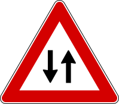
- The two-way traffic (doppio senso di circolazione) sign warns that a one-way carriageway becomes two-way ahead: the one-way ends, oncoming traffic shares your carriageway, so keep to the right and take special care. Every maneuver allowed on a two-way road, overtaking included, is allowed if conditions permit.
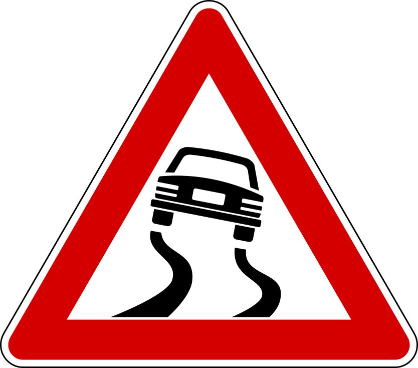
- The slippery road (strada sdrucciolevole) sign calls for smooth steering, gentle braking, and a longer following distance. It does not oblige you to fit chains.
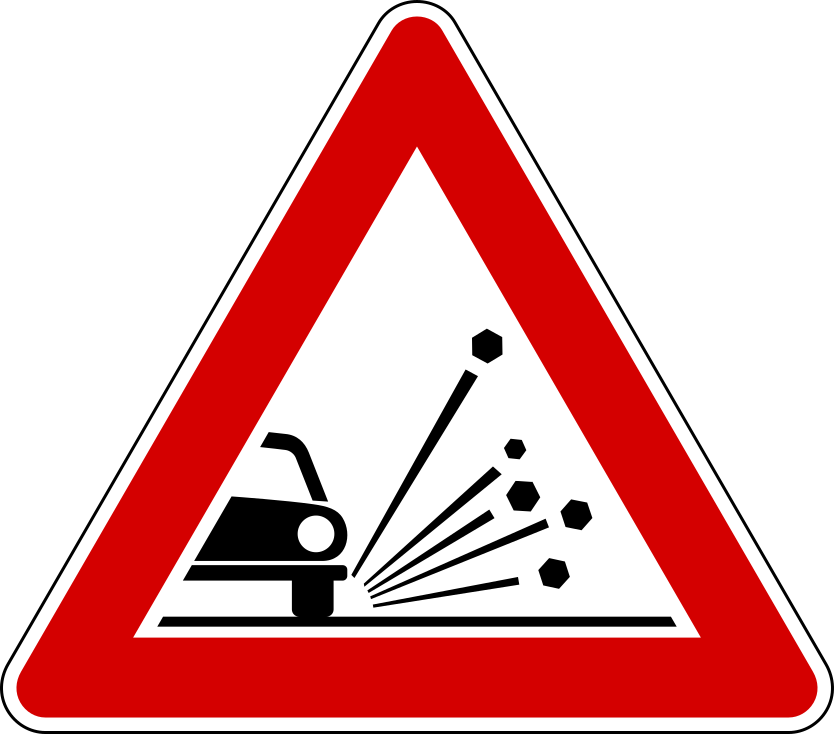
- The loose gravel (materiale instabile sulla strada) sign warns that passing vehicles can fling gravel a long way and that loose material reduces grip, so slow down, keep well back from the vehicle ahead, and take care around pedestrians even off the roadway.
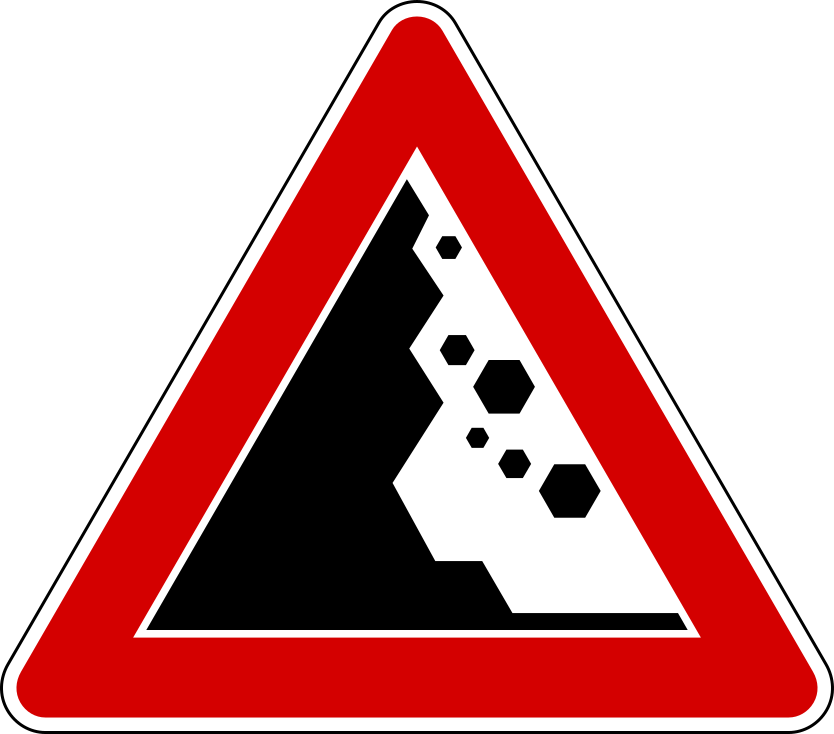
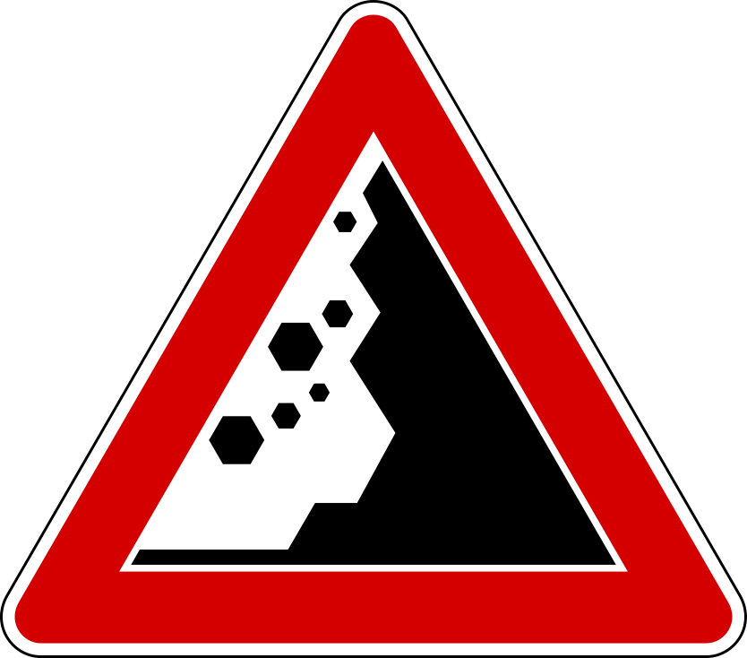
- The falling rocks (caduta massi) sign, which exists in a left and a right version (the rock face is on the side the stones fall from), warns of a stretch where rocks may fall and where stones may already be lying on the carriageway. Moderate your speed so you can avoid them, watch for sudden braking by vehicles ahead, and avoid long stops there.
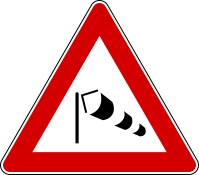
- The crosswind (forte vento laterale) sign shows a windsock, and it tells you to grip the wheel firmly. The danger is greatest for tarp-sided trucks, vans, vehicles towing trailers or caravans, two-wheelers, and empty or light vehicles, and it grows with the vehicle's side area; it is worst at tunnel exits and on viaducts. Those vehicles should slow down and stop if needed; expect oncoming vehicles to swerve; when overtaking, keep a greater lateral distance, never a smaller one.
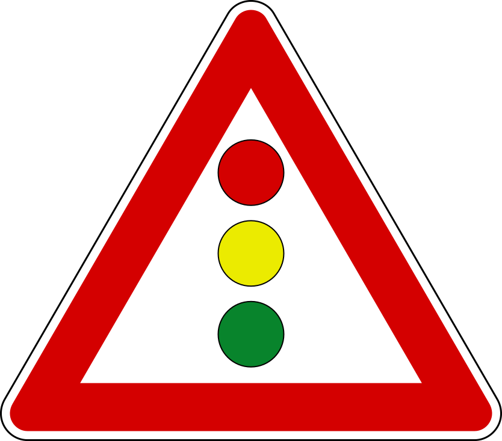
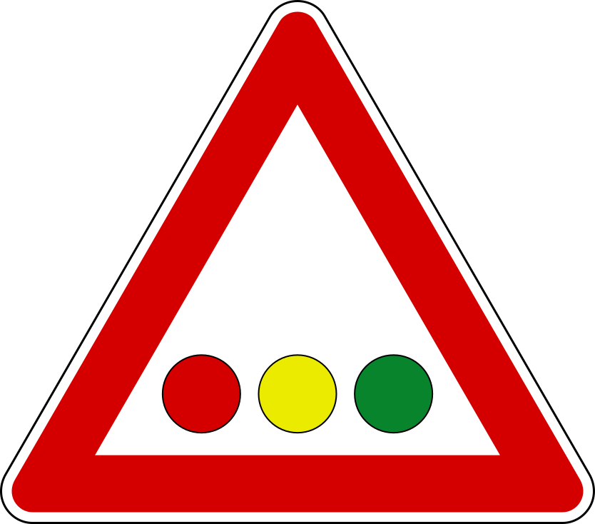
- The traffic light ahead (semaforo) sign is a triangle carrying a small picture of a traffic light: three discs painted on the panel. This advance warning is mandatory on extra-urban roads, where a signal may be unexpected, and it exists in vertical and horizontal versions. On the sign's own panel, the painted yellow disc may be replaced by a real flashing yellow light built into the sign, which makes the warning visible from farther away. Only the yellow one: the red disc may not be replaced by a flashing red light, and the built-in light flashes, never steady. All of this concerns the discs on the warning sign, not the traffic light it announces.
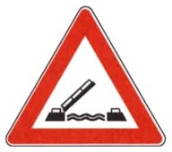
- The movable bridge (ponte mobile) sign warns of a bridge that can open for boats, with the risk of ending up in the water or hitting the vehicles queued ahead. It may carry a panel with the bridge's operating hours and the three-bar countdown panel, and it may be followed by flashing red lights: when they flash you must stop, and move again only when they go out. The sign itself does not order a stop before every crossing of the bridge.
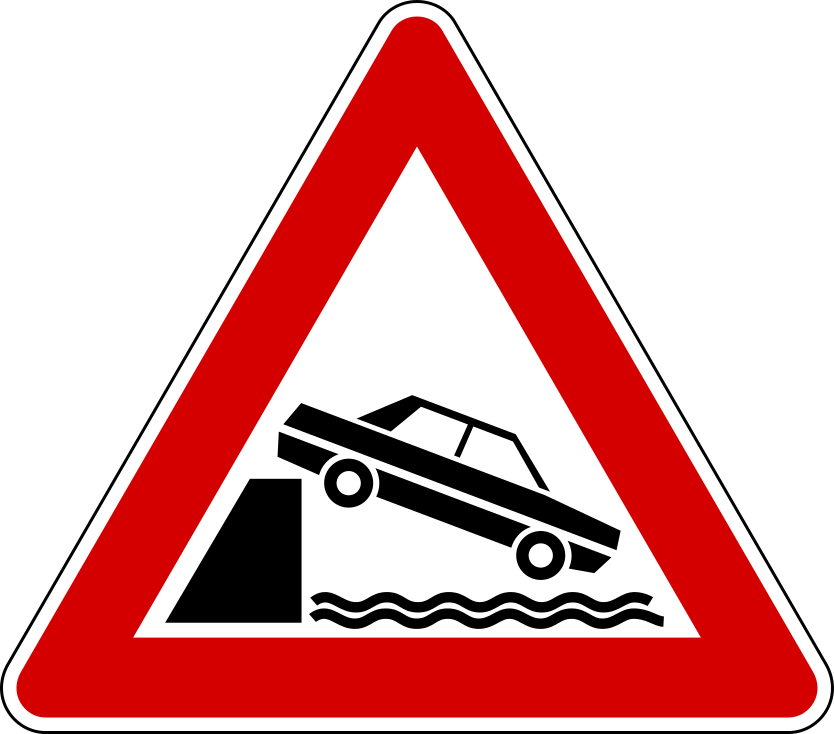
- The quay or embankment (sbocco su argine o banchina) sign covers every case where the road runs out at a water's edge: a river bank, canal bank, port quay, or pier. The danger is going off the edge into the water, so keep away from the edge, with particular caution at night and when reversing.
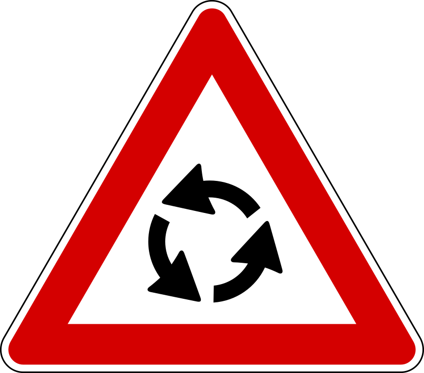
- The roundabout ahead (rotatoria) sign warns of a junction where traffic circulates counterclockwise around an island; it is used on extra-urban roads and allowed in town too.
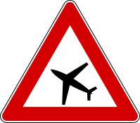
- The low-flying aircraft (aeromobili a bassa quota) sign stands near airfields, where sudden noise or lights can startle a driver: stay calm and do not brake abruptly.
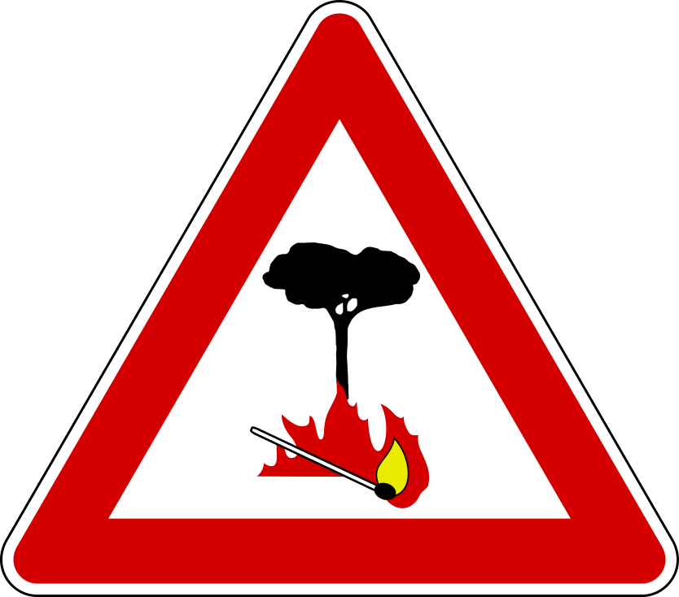
- The fire risk (pericolo di incendio) sign marks a stretch through an easily flammable area, typically a forest; it always carries an extent panel with the length of the stretch. Throwing lit cigarettes or anything burning from the vehicle is forbidden and can start a fire; avoid parking on dry grass, especially with a catalytic converter. It does not ban vehicles carrying flammable goods.
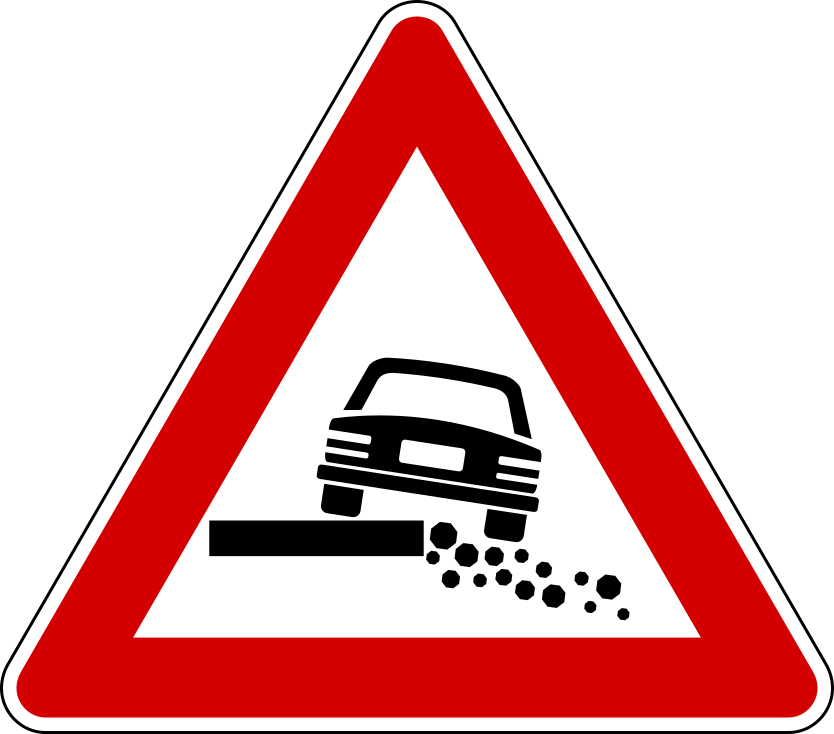
- The soft shoulder (banchina cedevole) sign warns that the shoulder can give way under a wheel: do not ride on or pull onto the shoulder.
"Other dangers" and how to respond
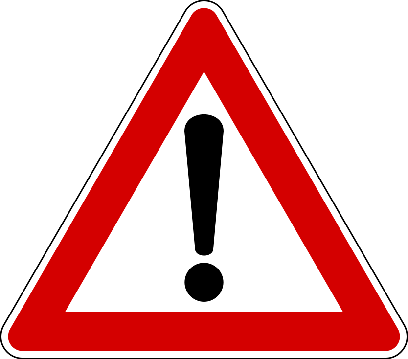
- The "other dangers" (altri pericoli) sign is a triangle with an exclamation mark. It is generic, and a panel beneath it states the specific hazard. On its own it simply means "an unusual danger not covered by the other signs," and in an emergency it may be used without any panel.
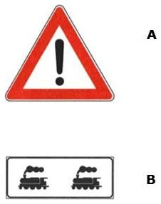
- With a BINARI DI MANOVRA panel, the sign warns of shunting tracks (binari di manovra) serving industrial plants or freight yards, which can cross the road. Trains maneuver there at low speed: slow down and be ready to stop.
- The correct response to a warning triangle is to reduce speed, increase your following distance, and be ready to stop. You do not necessarily have to stop or yield. At the railroad-crossing cross, however, you must be ready to stop and yield to any train.
How the exam phrases it. A warning sign permits nothing and forbids nothing by itself. "In presenza del segnale non è consentito X" is true only when the Code's general rules forbid X at that hazard, and only when the statement carries the rule's condition: overtaking is forbidden at curves, crests and crossings on a two-way road with one lane per direction; stopping and parking are forbidden near railroad tracks; passing a vehicle stopped for pedestrians is forbidden; a U-turn at a curve is forbidden. The same ban without its condition ("overtaking is forbidden") is false, and so is any ban the general rules do not contain. "Il segnale consente X" is false almost without exception.
Summary of key points
- This family uses three shapes: the triangle (warn only), the St. Andrew's cross (an X, at a railroad crossing, yield), and the countdown panels (rectangles before a crossing).
- A red-bordered triangle warns of a hazard ahead and never forbids, orders, or grants precedence.
- A yellow background means the same triangle warning, used temporarily at road work sites. Italy's yellow is the US's orange (temporary / construction).
- The triangle marks a danger ahead (about 150 m outside towns). The cross marks the crossing itself.
- Resolve the look-alikes by contrast: crest vs dip, uphill vs downhill, bend direction, narrowing on one side vs both, crossing with vs without barriers, single vs double track cross.
- The exclamation-mark sign means "other danger," with a panel naming it.